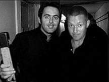
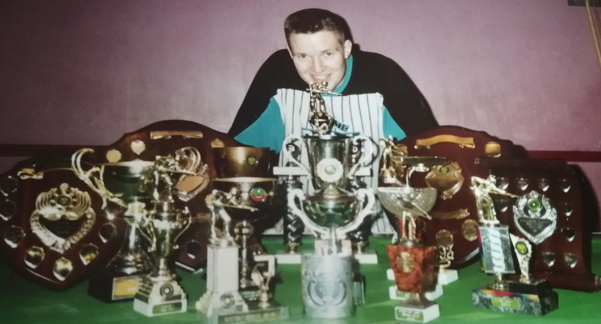
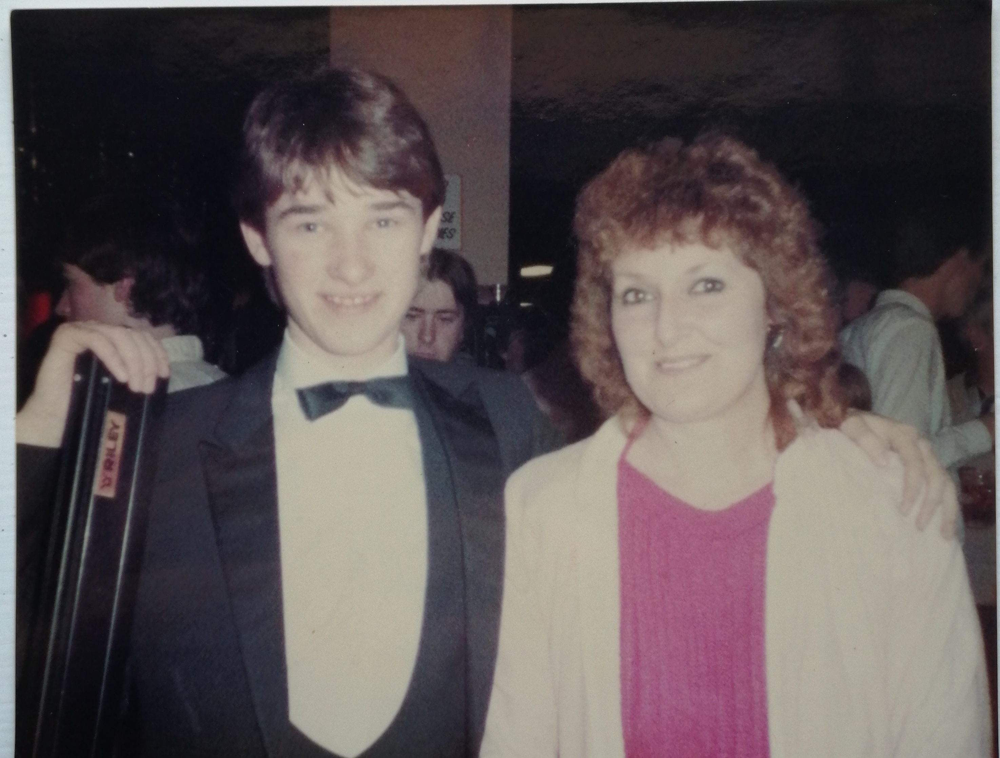

I have worked at Sky for 7 years,the first year i started in the DTH world but after one year i was lucky enough to move over to the Tech Team in BBTT, which is where i still am to this day
At 16 I started my working life as a semi professional snooker player, travelling the country playing many famous faces which i did until the age of 27 and have played snooker since the age of 6
 At 27 i had to then look for a 'real job' so worked in an IT department of a print company before being promoted to the IT which i did for a further 13 years
I have also gained a qualification in Snooker coaching which i have held for 10 years
